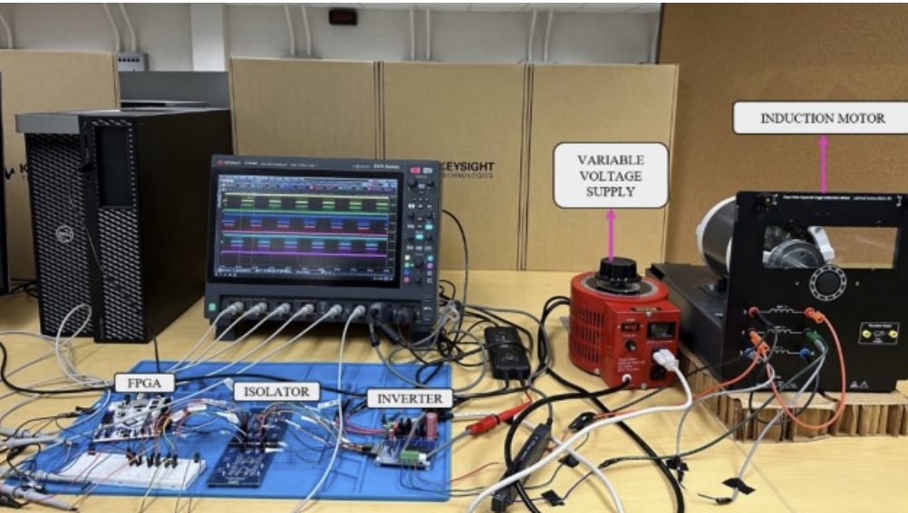
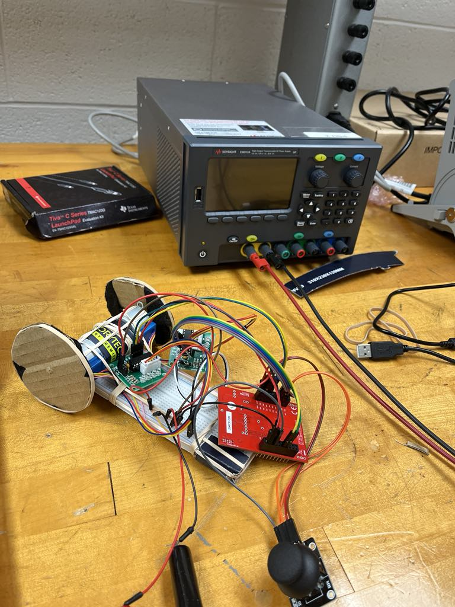

|
Electrical Engineer at Luxium Solutions, previously interned at Aptiv and Parker Hannifin. My academic background includes a Master's degree in Electrical Engineering and a Bachelor's degree in Electrical and Computer Engineering from Youngstown State University. My work focuses on electrical engineering applications for scintillation detectors for radiation detection. Email / CV / LinkedIn / GitHub / Google Scholar |
I am interested in embedded systems and power electronics.I like writing low level code for embedded systems.
|
 |
Harmonic content analysis of a soft starting variable frequency motor drive based on FPGA
Yogesh Sapkota IEEE 3rd SEFET, 2023 arXiv This study proposes a Field Programmable Gate Array (FPGA)-based variable frequency soft-starting motor drive for a three-phase induction motor |
|
 |
Stepper Motor Toy Car
Lab Project GitHub Developed a stepper motor control system for a toy car with precise motion control and embedded systems integration. |
Based on Jon Barron's website.